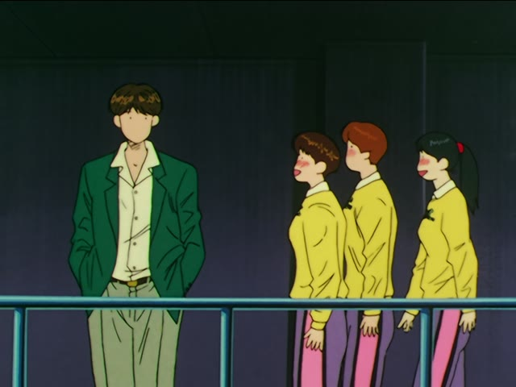

よね

YouTube · video
えっと、皆さん、バベルの塔って知ってますよね？
"Um, everyone, you know the Tower of Babel, right?"
よね at the end of a sentence means "I'm pretty sure this is true, right?". It goes on the very end, after です, ます or a plain verb or adjective. Two uses: checking something you think is true, and agreeing ("we both feel this, don't we").
On this card, he's pretty sure his viewers know the story, but he checks before going on. It's not news (that's よ) and it's not something you're both looking at right now (that's ね): it's something he already believes and wants a nod on.

Shirokuma Cafe · Season 1, Episode 14
パンダ君のバイトって、週二日だよね。
"Panda's part-time job is two days a week, right?"
He thinks he remembers, and he's double-checking. 週二日 is a noun, so it gets だ before よね.
Casual, after a noun or な-adjective? Add だ first.
| Word | Add | Ending | ||
|---|---|---|---|---|
| Noun | 学生 | だ | よね | You're a student, right? |
| な-adjective | 静か | だ | よね | It's quiet, right? |
| Verb | 行く | – | よね | You're going, right? |
| い-adjective | 高い | – | よね | It's expensive, right? |
Polite: always ですよね or ますよね (学生ですよね, 行きますよね).
Quick Examples
You're about to pay at a shop and want to check before you hand over your card.
カード、使えますよね？
"I can use a card, right?"
PoliteChecking: you're fairly sure, but you want a yes first.
A coworker mentioned last week they were from Osaka.
田中さん、大阪出身ですよね？
"Tanaka-san, you're from Osaka, right?"
PoliteChecking: you think you remember, and you make sure.
You run into your neighbor outside on a very hot afternoon.
今日、暑いですよね。
"It's hot today, isn't it."
PoliteAgreeing: you both know it's hot. You're just sharing the feeling.
Your friend says they hate waiting in long lines. You feel the same.
わかる。長い列、嫌だよね。
"I get it. Long lines are the worst, right?"
CasualAgreeing: not checking a fact, you're saying "everyone feels this, don't they".
With and without
Examples from Media

Shirokuma Cafe · Season 1, Episode 5
パフェフェアって、なんか言いづらいですよね。
"'Parfait fair' is kind of hard to say, isn't it."
His own opinion, but he's sure the others will agree. ですよね after an い-adjective (polite).

Slam Dunk · Episode 53
あの… 翔陽の藤真さんですよね？
"Um... you're Fujima from Shoyo, right?"
Checking: she's pretty sure it's him, but asks before going up to him. A noun + です + よね.
Demon Slayer · Episode 8
もっとたくさんの人が助かりますよね？
"[If she makes the medicine,] a lot more people will be saved, right?"
Checking: he's sure of it, and wants her to say yes. A verb in ます form + よね.
Kekkon Dekinai Otoko · Episode 11
やっぱり夜道は怖いですよね。
"Walking home alone at night is scary, isn't it."
Agreeing: not a real question. She's sure the other woman feels the same. An い-adjective + です + よね.

Teasing Master Takagi-san · Season 3, Episode 3
これってさ… 間接キス…だよね？
"Hey, this is... an indirect kiss... right?"
He's pretty sure, and needs her to confirm. 間接キス is a noun, so casual gets だよね.

New Atashin'chi · Episode 1
お母さん、新兵器好きだよねえ。
"Mom, you sure love your new gadgets, huh."
Something she's seen Mom do again and again. 好き is a な-adjective, so だよね. The long え just makes it sound more fed up.
Good Morning Call · Episode 13
だよね！
"Right!"
1 Litre of Tears · Episode 5
いいよね？
"It's fine, right?"
Further Reading
A Dictionary of Basic Japanese Grammar
Entry "ne", Note 5 · p. 288
Tae Kim's Guide to Japanese Grammar
Adverbs and Sentence-ending particles · Combining both to get 「よね」